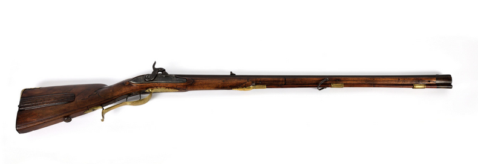
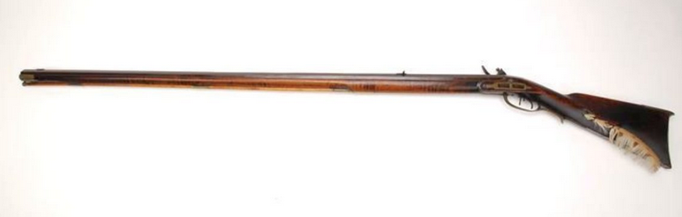

Para conocer las distintas plataformas de rifles (tanto automáticos como de cerrojo) que tenemos en la actualidad, tenemos que remontar hasta el siglo IX, concretamente en el descubrimiento de la pólvora de China, el cual se transmitiría por toda Asia y Europa. Cabe destacar que, aunque el “Rifle” como tal no apareció hasta bien entrado el siglo XVIII, sus predecesores como la “Lanza de Fuego” o el “Mosquete” influyeron de gran manera y fueron la fundación sobre la cual se sostienen las armas de fuego que tenemos hoy en día. Por eso es importante conocer su historia. La primera constancia que se tiene de un arma de fuego se remonta al siglo X en China, donde se creó la “Lanza de Fuego”, un tubo relleno de pólvora negra enganchado al final de una lanza, el cual se podía utilizar como lanzallamas. Al añadirle shrapnel (fragmentación) se conseguía un efecto más devastador. Poco a poco se realizaron modificaciones, el bambú y la madera de la lanza se sustituyeron por metal, para evitar así el riesgo de accidentes y crear un arma más contundente.
Con el paso los siglos, la primitiva “Lanza de Fuego” evolucionó a lo que se conoce como “Mosquetes”. El mosquete es un arma que se carga por el cañón, es decir, tanto el proyectil como la pólvora han de ser introducidas previamente por el cañón para poder disparar, y así sucesivamente tras cada disparo. Pese a que éstas nuevas invenciones resultaron ser una revolución a la hora de entrar en batalla, su incorporación en el ejército no fue vista con buenos ojos por muchos al inicio, pues se consideraba que atacar al enemigo desde la lejanía era una táctica de cobardes. La primera mención del uso de armas de fuego en Europa proviene de Rusia, descrita en la crónica Sofiiskii vremennik, donde se menciona que durante la defensa de Moscú frente a la “Horda Dorada” mongola, los moscovitas utilizaron armas conocidas como tyufyaki (тюфяки).
A pesar de tener un uso muy extendido durante varios siglos, el mosquete carecía de precisión, lo cual era compensado con extensas líneas de infantería que disparaban a la vez. Esta falta de precisión era debida a que el proyectil rebotaba con las paredes del cañón.
No fue hasta el siglo XVIII cuando se empezó el desarrollo y producción de lo que conocemos hoy en día como rifles. Entre ellos encontramos en Europa el “Jäger Rifle”, producido en Alemania y el “Long Rifle” o “Kentucky Rifle” en Estados Unidos (o las Colonias Británicas al inicio de su producción). Esta arma dejaba atrás la falta de precisión del mosquete, convirtiéndolo en el sustituto perfecto para la guerra y la caza. También se añadió una bayoneta al final del cañón, con el objetivo de poder utilizar el rifle como un arma cuerpo a cuerpo en caso de que fuese necesario.


A lo largo del siglo XVIII y XIX se realizaron numerosos avances en el campo de los rifles, y su uso fue extendido por todo el mundo (Guerras Napoleónicas, Guerra de Independencia de los EEUU, Guerra de independencia de España contra Francia entre otras). Entre estos cambios se encuentran:
Una vez llegados al siglo XX, el rifle comienza su gran etapa de cambios y la aparición de las grandes estrellas que conocemos hoy en día: entre ellos encontramos al rifle japonés Arisaka Type 30, el rifle ruso Mosin Nagant, el rifle alemán Karabiner 98k y el Mauser 98, el rifle estadounidense Springfield o el rifle británico Lee Enfield. Todos estos rifles tienen en común el uso de un sistema de cerrojo y el uso de los “cargadores, además de tener la posibilidad de incluir visores ópticos que aportaban una mayor capacidad para avistar y abatir a tropas enemigas desde una distancia segura.
Pero el rifle de cerrojo empezaba a tener una nueva competencia. Durante la Segunda Guerra Mundial se comprobó que la lentitud del rifle de cerrojo se quedaba atrás comparada con la cadencia de otras armas. Comenzaron a aparecer los rifles semiautomáticos, los cuales permitían disparar un mayor número de balas sin necesidad de tirar del cerrojo, convirtiéndolos en una opción mucho más viable para la infantería regular. Aparecieron rifles como el M1 Garand estadounidense, el Gewehr 41 y 43 alemán y el SVT-40 y SKS soviético. Comenzó así la diferenciación entre la infantería y los tiradores o francotiradores.
Pero no solo se crearon los rifles semiautomáticos. Durante la Segunda Guerra Mundial ya existían otras armas de fuego como las ametralladoras ligeras o los subfusiles (Thompson) con capacidad de disparo automático (el arma no deja de disparar hasta que no se suelte el gatillo) y cargadores que podían ser extraídos y reemplazados, haciendo el uso de “clips de balas” obsoletos. Alemania creó entonces una nueva arma, conocida como Mkb 42, la cual evolucionaria al Sturmgewehr 44 (STG 44). Este rifle seria conocido como el primer rifle de asalto funcional, caracterizado por el uso de un cargador que podía ser extraído y reemplazado por otro rápidamente, un selector de tiro automático y semiautomático y un diseño mucho más compacto que cualquier otro rifle del momento. Comenzó así el inicio de lo que se conoce hoy en día como Rifles de Asalto
Tras la Segunda Guerra Mundial, la Unión Soviética obtuvo un gran número de STG 44’s alemanes y comenzó a estudiar su diseño. Debido a que el STG 44 se incorporó muy tarde al conflicto, no tuvo el gran efecto que pudo haber tenido al principio, pero su diseño fue una gran influencia para uno de los rifles modernos más icónicos de la actualidad: el Avtomat Kalashnikova 47, conocido comúnmente como el AK-47, desarrollado por Mikhail Kalashnikov (1919 – 2013). La creación de este rifle provocó una nueva revolución que agitó al resto de naciones para desarrollar alternativas frente a esta nueva invención. Aquí comienza el inicio de una de las primeras grandes plataformas: la plataforma AK, la cual sigue en desarrollo en el día presente.
En el resto del mundo, comenzaron a verse nuevos rifles, denominados “rifles de combate”. Estos rifles eran característicos por el uso de cargadores de 20 balas, del calibre 7.62x51 NATO, con capacidad de cambiar de modo de disparo. En Europa encontramos el desarrollo de conocidos rifles de batalla como el FN FAL belga, el CETME español y su evolución al G3 alemán. El problema de estos rifles es que, a pesar de tener la capacidad de disparar en automático, el retroceso del arma hacía más preferible el uso semiautomático casi siempre.
Mientras tanto, Estados Unidos seguía haciendo uso de subfusiles y rifles semiautomáticos. Entre ellos cabe destaca el rifle de batalla M14, la evolución del fusil M1 Garand. A pesar de que el M14 tenía la capacidad de disparar en modo automático, el diseño del rifle y la bala que utilizaba hacían que usar el arma de manera automática fuera prácticamente inviable. Esto desembocó en el desarrollo y la invención de una nueva plataforma, la plataforma AR (ArmaLite). Nació de esta manera el AR-15, conocido por su uso en la guerra de Vietnam como el fusil M16. A pesar de sus problemas iniciales debido a la creación especifica de un nuevo calibre (5.56x45 NATO), el M16 y sus derivados como el M16A2 demostraron ser un arma muy superior al M14, el cual frenó su producción en favor del AR-15. Entre las mejoras encontramos la capacidad de llevar una mayor cantidad de munición gracias a el tamaño menor de los cargadores, un tamaño más compacto y un retroceso mucho menor, además de demostrar mayor resistencia frente al barro, agua o arena. Comienza aquí la “guerra” entre la plataforma AK y la plataforma AR.
A día de hoy, disponemos de distintas plataformas de rifle entre las cuales podemos distinguir 2 claros contrincantes: el modelo AR y el modelo AK. Esto no quita que no se usen otro tipo de plataformas en distintos países, pero si se nota una clara preferencia entre los países del bloque Oeste y del bloque del Este. Vamos a ver un poco de historia, el por qué se adoptó la plataforma y las ventajas e inconvenientes de cada una.